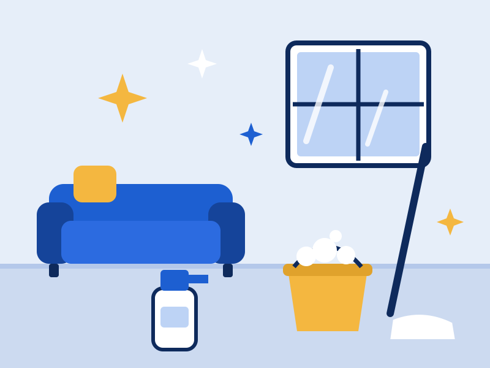

Temizlik Hizmetlerimiz
- Ev temizliği
- Ofis temizliği
- Yeni bina ve inşaat sonrası temizlik
- Mutfak, banyo ve cam detaylı temizliği
Ev, ofis ve yeni bina temizliğinden evde yaşlı, hasta ve çocuk bakımına; yurtdışından gelen personel için oturma ve çalışma izni danışmanlığına kadar ihtiyacınız olan her şey tek adreste.
Taşçıoğlu Temizlik olarak Kadıköy Altıyol'daki ofisimizden ailelere ve iş yerlerine hizmet veriyoruz. Ev, ofis ve yeni bina temizliğinin yanı sıra evde yaşlı, hasta ve çocuk bakımı alanında da güvenilir personel sağlıyoruz. Yurtdışından gelen personel ve onları istihdam eden aileler için oturma ve çalışma izni süreçlerinde de danışmanlık veriyoruz.
Önce dinler, sonra planlarız. Her eve ve iş yerine temiz, düzenli ve huzurlu bir ortam sunmak için işi söz verdiğimiz gibi teslim ederiz.

Ekibimizi iş başında izleyin. Bir kategori seçin, videosu oynasın.
"Kadıköy'deki evimiz için düzenli temizlik hizmeti alıyoruz. Gelen personel hem çok saygılı hem de işini titizlikle yapıyor."
"Annemiz için yatılı bakıcı arayışımızda Taşçıoğlu Temizlik çok yardımcı oldu. Güvenilir ve şefkatli bir yardımcı bulduk."
"Bakıcımızın oturma ve çalışma izni başvurularını eksiksiz yönettiler. Yasal süreçlerdeki destekleri harikaydı."
Bilgilerinizi girip gönder butonuna bastığınızda WhatsApp açılır ve talebiniz hazır mesaj olarak bize iletilir. Dilerseniz doğrudan arayabilirsiniz.